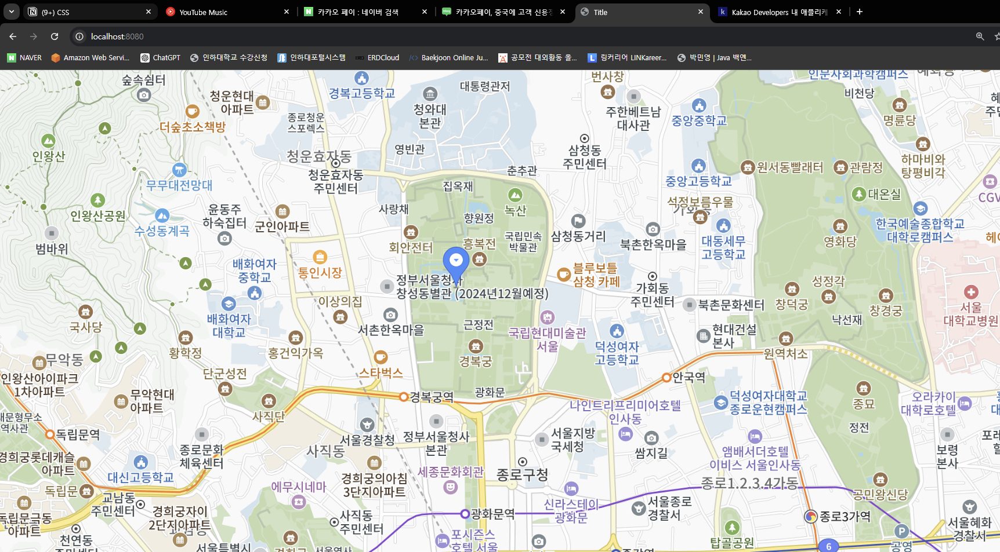
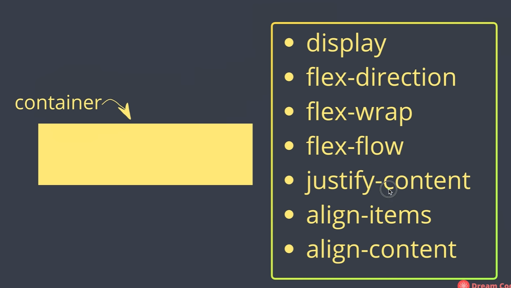
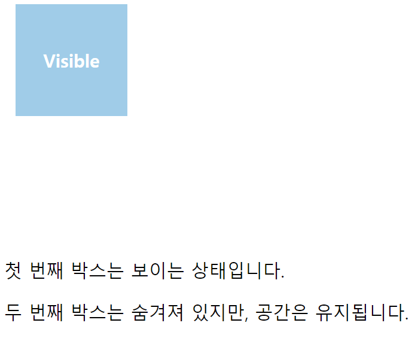
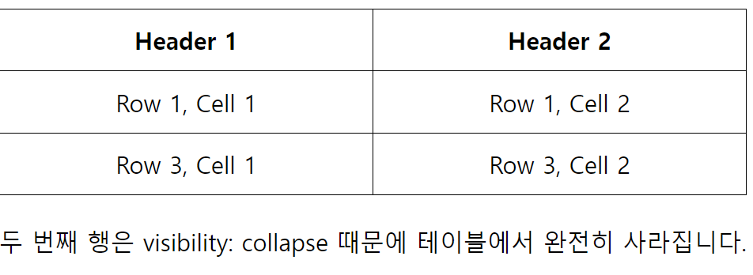
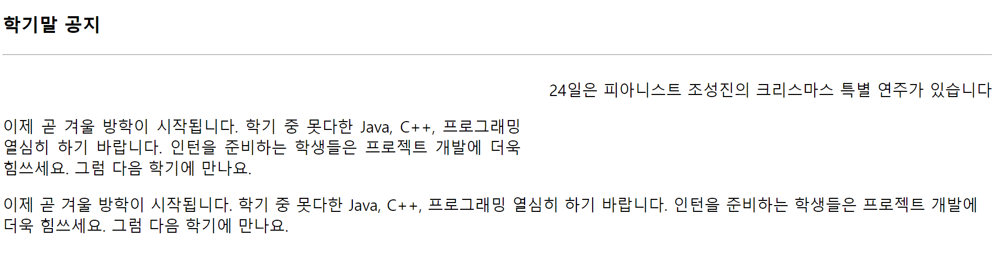

개요
CSS(Cascading Style Sheets)
- 웹페이지에 자주 적용되는 부분들은 미리 정리하고 조합하여 정의한 후, 페이지 내부에서 필요할 때마다 해당 부분을 적용하는 스타일시트 중 하나
- HTML로는 부족한 레이아웃이나 폰트 등에 다양성을 부여한다.
기본 동작
- CSS 사용하는 방법 3가지
<head></head>사이 기술<!DOCTYPE html> <html lang="en"> <head> <meta charset="UTF-8"> <title>Title</title> <style type="text/css"> body{ background: mistyrose; } h3{ color: purple; } hr{ border: 5px solid yellowgreen; } span{ color:blue; font-size: 20px; } </style> </head> <body> <h3>CSS 스타일 맛보기</h3> <hr> <p>나는 <span>웹 프로그래밍</span>을 좋아합니다.</p> </body> </html><body>안에서 직접 기술<!DOCTYPE html> <html lang="en"> <head> <meta charset="UTF-8"> <title>Title</title> </head> <body> <h3>손 흥 민</h3> <hr> <p>오페라를 좋아하고</p> <p>엘비스 프레슬리를 좋아하고</p> <p style="color: blue">김치부침개를 좋아하고</p> <p style="color:magenta; font-size:10px">축구를 좋아합니다.</p> <!-- 안에 있는 설정이 우선권이 더 높음--> </body> </html>*.css(파일)로 따로 저장- import
<!DOCTYPE html> <html lang="en"> <head> <meta charset="UTF-8"> <title>Title</title> <style type="text/css"> @import url("../css/myStyle.css"); </style> </head> <body> <h3>김연아</h3> <hr> <p>저는 피겨 선수 김연아입니다. 음악을 들으면서 책읽기를 좋아합니다. 김치 찌개와 삼겹살을 무척 좋아합니다.</p> </body> </html> - link
<!DOCTYPE html> <html lang="en"> <head> <meta charset="UTF-8"> <title>Title</title> <link rel="stylesheet" href="../css/myStyle.css"> </head> <body> <h3>김연아</h3> <hr> <p>저는 피겨 선수 김연아입니다. 음악을 들으면서 책읽기를 좋아합니다. 김치 찌개와 삼겹살을 무척 좋아합니다.</p> </body> </html>
- import
특성
- 기존의 HTML 기능을 확장해서 사용할 수 있다.
- 한 번의 지정으로 웹 문서 모든 곳에 적용할 수 있다.
- CSS는 상위의 기능을 상속받을 수 있다.
- 복잡하지 않고 쉽게 파악할 수 있어 관리가 용이하다.
상속
상속이란 상위(부모, 조상) 요소에 적용된 프로퍼티를 하위(자식, 자손) 요소가 물려받는 것을 의미한다.
상속 기능이 없다면 각 요소의 Rule set에 프로퍼티를 매번 각각 지정해야 한다.
하지만 모든 프로퍼티가 상속되는 것은 아니다. 프로퍼티 중에는 상속이 되는 것과 되지 않는 것이 있다.
font, color, visibility, opacity, line-height, text-align, white-space 이 상속 가능하다
스타일 시트가 중복되었을 때
- 1순위
- 태그 안의 스타일 시트
<p style="font-size: 25px">안녕하세요 길동님!</p>
- 태그 안의 스타일 시트
- 2순위
<style>태그<style type="text/css"> p{ color: blue; font-size: 12px; } </style>
- 3순위
- 파일 스타일 시트
<style type="text/css"> @import "../css/external.css"; /*가장 순위가 낮음*/ p{ color: blue; font-size: 12px; } </style>
- 파일 스타일 시트
Selector
- 자식 selector
>기호로 지정한- 중간 태그를 건너 뛰어도 안된다.
<!DOCTYPE html> <html lang="en"> <head> <meta charset="UTF-8"> <title>Title</title> <style type="text/css"> /* h3{ !*태그에 직접 씌우는 방법 -> 아주 안좋은 방법*! color: brown; } li{ color: brown; }*/ h3, li{ color: brown; } /* 자식 선택자(selector) 1. > 기호로 지정한다. 2. 중간 태그를 건너 뛰어도 안된다. */ /* div -> div => strong 상속관계 */ div > div > strong{ background: yellow; } </style> </head> <body class="main"> <h3>Web Programming</h3> <hr> <div> <div>2학기 <strong>학습 내용</strong>입니다</div> <ul id="list"> <li><span>HTML5</span></li> <li><strong>CSS</strong></li> <li>JavaScript</li> </ul> <div class="warning">60점 이하는 F</div> </div> </body> </html>- 같은 style을 씌우고 싶은 태그들이 있으면
h3, li처럼 사용해도 된다. <strong>학습 내용</strong>→ div > div > strong 타고 상속관계에 들어간다.
- 자손 selector
- 공백으로 지정한다
- 자식 selector와 다르게 중간 태그를 건너 뛰어도 된다.
<!DOCTYPE html> <html lang="en"> <head> <meta charset="UTF-8"> <title>Title</title> <style type="text/css"> /* 자손 셀렉터 1. 공백으로 지정한다 2. 중간 태그를 건너 띄워도 된다. */ ul strong{ background: magenta; } </style> </head> <body class="main"> <h3>Web Programming</h3> <hr> <div> <div>2학기 <strong>학습 내용</strong>입니다</div> <ul id="list"> <li><span>HTML5</span></li> <li><strong>CSS</strong></li> <li>JavaScript</li> </ul> <div class="warning">60점 이하는 F</div> </div> </body> </html>
- 클래스 선택(
.) / id 선택(#).을 통해 선택해도 된다 → 하지만 어떤 태그의 클래스인지 알 수 없다body.main을 통해 body태그의 클래스main을 지정한 것을 명시적으로 알 수 있다.
<!DOCTYPE html> <html lang="en"> <head> <meta charset="UTF-8"> <title>Title</title> <style type="text/css"> .warning{ color: red; } body.main{ /*태그를 구체적으로 적어줘야 남들이 봤을 때 혼동이 적음*/ background: aliceblue; } #list span{ /*#list = id="list"*/ color: forestgreen; } </style> </head> <body class="main"> <h3>Web Programming</h3> <hr> <div> <div>2학기 <strong>학습 내용</strong>입니다</div> <ul id="list"> <li><span>HTML5</span></li> <li><strong>CSS</strong></li> <li>JavaScript</li> </ul> <div class="warning">60점 이하는 F</div> </div> </body> </html>
가상 선택자
css에는 가상 요소(pseudo-element)와 가상 클래스(pseudo-class)가 있다.
이것들을 사용해서 html 문서의 수정 없이 css만으로 디자인적 요소를 추가할 수 있다.
가상 클래스는 콜른을 1개, 가상 요소는 콜론을 2개 쓴다.
하지만 콜론을 한 개만 써도 대부분의 브라우저에서 제대로 작동한다.
가상 요소
가상 클래스가 실제로 존재하는 요소에 클래스 추가 없이 디자인을 입히기 위한 것이라면,
가상 요소는 아예 실제로 존재하지 않는 요소를 만들게 해준다
가상 요소를 이용하면 특정 요소 앞에 문자열이나 이미지를 넣을 수 있다
HTML을 변경하지 않고 요소를 추가할 수 있는 유용한 선택자이다.
<!DOCTYPE html>
<html lang="en">
<head>
<meta charset="UTF-8">
<title>Title</title>
<style type="text/css">
/*가상 클래스 - 첫 번째 문자를 선택*/
h3:first-letter{
color: red;
font-size: 25px;
}
li:hover{
background: linen;
}
::selection{ /* 가상 요소 - 마우스로 드래그하면 글자색은 빨강, 바탕색은 노랑으로 변한다. */
color: red;
background: yellow;
}
</style>
</head>
<body class="main">
<h3>Web Programming</h3>
<hr>
<div>
<div>2학기 <strong>학습 내용</strong>입니다</div>
<ul id="list">
<li><span>HTML5</span></li>
<li><strong>CSS</strong></li>
<li>JavaScript</li>
</ul>
<div class="warning">60점 이 하는 F</div>
</div>
</body>
</html>
<!DOCTYPE html>
<html lang="en">
<head>
<meta charset="UTF-8">
<title>Title</title>
<style>
h1::before{
content: "안뇽하세염";
}
h2::after{
content: "안녕못해염";
}
</style>
</head>
<body>
<h1>hello world</h1>
<h2>hello world</h2>
</body>
</html>Back Ground Repeat
<style>
div{
width: 200px;
height: 200px;
color: blueviolet;
font-size: 16px;
background-color: skyblue;
background-size: 100px;
background-image: url("../../static/spongebob.png");
}
</style><style>
div{
width: 200px;
height: 200px;
color: blueviolet;
font-size: 16px;
background-color: skyblue;
background-size: 100px;
background-image: url("../../static/spongebob.png");
background-repeat: repeat-y; /* y축 반복*/
}
</style><style>
div{
width: 200px;
height: 200px;
color: blueviolet;
font-size: 16px;
background-color: skyblue;
background-size: 100px;
background-image: url("../../static/spongebob.png");
background-repeat: repeat-y; /* y축 반복*/
background-position: center center;
}
</style>⭐ Display 속성
요소를 어떻게 보여줄지 레이아웃을 결정하는 속성 디폴트 → inline 모든 elements에 적용 가능하다.

<!DOCTYPE html>
<html>
<head>
<meta charset="UTF-8">
<title>Insert title here</title>
<style type="text/css">
div {
border: 1px solid yellowgreen;
color: blue;
background: aliceblue;
}
span {
border: 3px dotted red;
background: yellow;
}
</style>
</head>
<body>
<h3>인라인, 인라인 블록, 블록</h3>
<hr>
나는 <div>div</div>입니다<br><br>
나는 <div style="display: none;">div(none)</div>입니다<br><br>
나는 <div style="display: inline;">div(inline)</div>입니다<br><br>
나는 <div style="display: inline-block; height: 50px;">div(inline-block)</div>입니다<br><br>
나는 <div>div<span style="display: block;">span(block)</span>입니다<br><br></div>
</body>
</html>display:none: 아예 없었던 것처럼 영역도 잡히지 않는다display:inline: 줄바꿈 없이 순서대로 한 줄에 다른 엘리먼트들과 나란히 배치된다.- content의 크기만큼 공간을 차지하므로 width, height 속성을 지정해도 무시된다.
padding, margin 속성은 좌우 간격만 반영이 되고 상하 간격은 반영되지 않는다.<span>,<a>,<em>등
display:block: 혼자 한 줄을 차지한다- 매번 줄바꿈이 되어 여러 줄에 보이게 된다
- width, height, padding, margin 속성이 모두 반영된다
<div>,<p>,<h1>등
display:inline-block: inline 엘리먼트처럼 전후 줄바꿈 없이 한 줄에 다른 엘리먼트들과 나란히 배치된다- inline에서 불가능하던 width, height, padding, margin 속성의 상하 간격 지정이 가능하다
- inline-block을 이용하면 여러 개의 엘리먼트를 한 줄에 정확히 원하는 너비만큼 배치할 수 있기 때문에 레이아웃에 활용할 수 있다.
<button>,<select>등
display: flex- 아이템들을 가로 방향 혹은 세로 방향으로(1차원 배치) 배치할 수 있는 방식
<!DOCTYPE html> <html lang="en"> <head> <meta charset="UTF-8"> <meta name="viewport" content="width=device-width, initial-scale=1.0"> <style> .container { display: flex; flex-direction: row; justify-content: space-between; align-items: center; height: 200px; border: 2px solid #333; } .item { width: 100px; height: 100px; background-color: lightblue; text-align: center; line-height: 100px; border: 1px solid #000; } </style> <title>Flexbox Example</title> </head> <body> <div class="container"> <div class="item">Item 1</div> <div class="item">Item 2</div> <div class="item">Item 3</div> </div> </body> </html>display: flex가 적용된.container내부에 3개의.item요소가 있다.row방향으로 정렬되며, 각 아이템 사이에 동일한 간격(space-between)이 적용된다. 아이템은align-items: center로 세로축 중앙에 정렬된다.
display:grid- flex와 다르게 2차원으로 배치하는 방식 → column과 row의 비율이나 크기를 지정한다
<!DOCTYPE html> <html lang="en"> <head> <meta charset="UTF-8"> <meta name="viewport" content="width=device-width, initial-scale=1.0"> <style> .container { display: grid; grid-template-columns: 1fr 2fr 1fr; grid-template-rows: 100px 100px; grid-gap: 10px; border: 2px solid #333; } .item { background-color: lightgreen; text-align: center; line-height: 100px; border: 1px solid #000; } </style> <title>Grid Example</title> </head> <body> <div class="container"> <div class="item">Item 1</div> <div class="item">Item 2</div> <div class="item">Item 3</div> <div class="item">Item 4</div> </div> </body> </html>grid-template-rows는 가로에 배치할 셀들의 비율이나 크기를 지정하는 속성grid-template-columns는 세로로 배치할 셀들의 비율이나 크기를 나타낸다.
- flex와 다르게 2차원으로 배치하는 방식 → column과 row의 비율이나 크기를 지정한다
display : table- 레이아웃을 table로 표현할 수 있는 속성이다.
display : table // table 요소처럼 표현하기 display : table // table 요소처럼 표현하기 display : table // table 요소처럼 표현하기 display : table-cell // td 요소처럼 표현하기 display : table-caption // caption요소처럼 표현하기
<!DOCTYPE html> <html lang="en"> <head> <meta charset="UTF-8"> <meta name="viewport" content="width=device-width, initial-scale=1.0"> <style> .container { display: table; width: 100%; border-spacing: 10px; border: 2px solid #333; } .row { display: table-row; } .cell { display: table-cell; padding: 20px; background-color: lightcoral; text-align: center; border: 1px solid #000; } </style> <title>Table Layout Example</title> </head> <body> <div class="container"> <div class="row"> <div class="cell">Cell 1</div> <div class="cell">Cell 2</div> <div class="cell">Cell 3</div> </div> <div class="row"> <div class="cell">Cell 4</div> <div class="cell">Cell 5</div> <div class="cell">Cell 6</div> </div> </div> </body> </html>- 레이아웃을 table로 표현할 수 있는 속성이다.
CSS Flexbox 정리
Flexbox는 총 2가지만 이해하면 된다.
- container(box에 적용되는 속성값)과 그 안에 각각의 요소인 item들이 존재한다.
- container에 꾸며줄 수 있는 속성
- item에 적용할 수 있는 속성

- Flexbox에는 중심축과 반대축이 존재한다.

- 여기선 수평축이 중심축이고, 수직축이 반대축이 된다.

- 여기의 경우에는 위에서 아래로 정렬되기 때문에 수직축이 중심축, 수평축이 반대축이 된다.
visibility 속성
- 기본값은 ‘visible’이며 ‘hidden’을 지정할 경우에는 지정된 요소가 보이지 않게 된다.
display:none은 원래 없었던 것처럼 표현되지만,visibility: hidden은 보이진 않지만 공간은 유지가 된다.
visibility: visible와visibility: hidden예제
<!DOCTYPE html>
<html lang="en">
<head>
<meta charset="UTF-8">
<meta name="viewport" content="width=device-width, initial-scale=1.0">
<title>CSS Visibility Example</title>
<style>
.box {
width: 100px;
height: 100px;
background-color: skyblue;
margin: 10px;
text-align: center;
line-height: 100px;
font-weight: bold;
color: white;
}
.visible-box {
visibility: visible; /* 요소가 화면에 보임 */
}
.hidden-box {
visibility: hidden; /* 요소가 화면에 보이지 않지만, 공간은 차지함 */
}
</style>
</head>
<body>
<div class="box visible-box">Visible</div>
<div class="box hidden-box">Hidden</div>
<p>첫 번째 박스는 보이는 상태입니다.</p>
<p>두 번째 박스는 숨겨져 있지만, 공간은 유지됩니다.</p>
</body>
</html>
visibility: collapse예제
<!DOCTYPE html>
<html lang="en">
<head>
<meta charset="UTF-8">
<meta name="viewport" content="width=device-width, initial-scale=1.0">
<title>CSS Visibility Collapse Example</title>
<style>
table {
width: 50%;
border-collapse: collapse;
margin: 20px 0;
}
th, td {
border: 1px solid black;
padding: 10px;
text-align: center;
}
.hidden-row {
visibility: collapse; /* 이 행은 테이블에서 완전히 사라짐 */
}
</style>
</head>
<body>
<table>
<tr>
<th>Header 1</th>
<th>Header 2</th>
</tr>
<tr>
<td>Row 1, Cell 1</td>
<td>Row 1, Cell 2</td>
</tr>
<tr class="hidden-row">
<td>Row 2, Cell 1</td>
<td>Row 2, Cell 2</td>
</tr>
<tr>
<td>Row 3, Cell 1</td>
<td>Row 3, Cell 2</td>
</tr>
</table>
<p>두 번째 행은 visibility: collapse 때문에 테이블에서 완전히 사라집니다.</p>
</body>
</html>
visibility: collapse: 이 속성 값은 주로 테이블 행과 열에 사용되며, 해당 행이나 열이 테이블에서 완전히 사라지게 만듭니다. 즉, 요소가 사라지며 다른 행이나 열이 그 자리를 대신 채웁니다.
⭐ float 속성 & clear 속성
- float 속성
- left, right
- ⭐⭐ clear 속성
<!DOCTYPE html>
<html>
<head>
<meta charset="UTF-8">
<title>Insert title here</title>
<style type="text/css">
p#float {
float: right;
}
p.text1 {
clear: both;
margin-right: 30em;
text-align: justify;
}
</style>
</head>
<body>
<h3>학기말 공지</h3>
<hr>
<div>
<p id="float">
24일은 피아니스트 조성진의 크리스마스 특별 연주가 있습니다
</p>
<p class="text1">
이제 곧 겨울 방학이 시작됩니다. 학기 중 못다한 Java, C++, 프로그래밍 열심히 하기 바랍니다.
인턴을 준비하는 학생들은 프로젝트 개발에 더욱 힘쓰세요. 그럼 다음 학기에 만나요.
</p>
<p class="text2">
이제 곧 겨울 방학이 시작됩니다. 학기 중 못다한 Java, C++, 프로그래밍 열심히 하기 바랍니다.
인턴을 준비하는 학생들은 프로젝트 개발에 더욱 힘쓰세요. 그럼 다음 학기에 만나요.
</p>
</div>
</body>
</html>
- text1부터 float가 해제된다.
⭐ Position 속성
static: 기본값으로, 문서 흐름에 따라 자동 배치됩니다.relative:원래 위치를 기준으로 상대적으로 배치되며, 문서 흐름에 포함됩니다.absolute: 문서 흐름에서 제거되고,가장 가까운 위치 지정된 조상 요소를 기준으로 배치됩니다.fixed: 브라우저 창을 기준으로 고정되며,스크롤해도 위치가 변하지 않습니다.sticky:스크롤에 따라상대적인 위치에서 고정된 위치로 변하며, 임계점을 넘어서면 다시 상대적인 위치로 돌아갑니다.
<!DOCTYPE html>
<html lang="en">
<head>
<meta charset="UTF-8">
<meta name="viewport" content="width=device-width, initial-scale=1.0">
<style>
.box {
width: 150px;
height: 150px;
background-color: lightblue;
margin: 20px;
border: 2px solid #000;
}
/* static: 기본값 */
.static-box {
position: static;
background-color: lightcoral;
}
/* relative: 원래 위치에서 상대적으로 이동 */
.relative-box {
position: relative;
top: 20px;
left: 30px;
background-color: lightgreen;
}
/* absolute: 가장 가까운 위치 지정된 조상 요소를 기준으로 배치 */
.absolute-box {
position: absolute;
top: 50px;
left: 50px;
background-color: lightyellow;
}
/* fixed: 브라우저 창을 기준으로 고정 */
.fixed-box {
position: fixed;
bottom: 10px;
right: 10px;
background-color: lightpink;
}
/* sticky: 스크롤 시 임계점에서 고정 */
.sticky-box {
position: sticky;
top: 0;
background-color: lightgray;
}
/* Container for demonstration */
.container {
position: relative;
height: 400px;
border: 1px solid #ccc;
}
</style>
<title>CSS Position Example</title>
</head>
<body>
<h2>Position: static (default)</h2>
<div class="box static-box">Static Box</div>
<h2>Position: relative</h2>
<div class="box relative-box">Relative Box</div>
<h2>Position: absolute (within container)</h2>
<div class="container">
<div class="box absolute-box">Absolute Box</div>
</div>
<h2>Position: fixed (fixed to viewport)</h2>
<div class="box fixed-box">Fixed Box</div>
<h2>Position: sticky (sticky on scroll)</h2>
<div class="box sticky-box">Sticky Box</div>
<p style="height: 1000px;">Scroll down to see the Sticky Box behavior.</p>
</body>
</html>
1. position: static
<div class="box static-box">Static Box</div- 설명:
static은 기본 위치 지정 방식입니다. 이 값은 요소를 문서의 정상적인 흐름에 따라 배치하며,top,right,bottom,left속성은 적용되지 않습니다. 이 예제에서는 별도의 위치 조정이 없으며, 요소는 페이지에서 기본 위치에 놓입니다.
2. position: relative
<div class="box relative-box">Relative Box</div>- 설명:
relative는 요소를 문서 흐름에 남기면서, 원래 위치를 기준으로 상대적으로 이동시킵니다. 이 예제에서는top: 20px,left: 30px으로 설정되어 요소가 원래 위치에서 아래로 20px, 오른쪽으로 30px 이동합니다. 다른 요소들은 원래 위치를 기준으로 배치됩니다.
3. position: absolute
<div class="container">
<div class="box absolute-box">Absolute Box</div>
</div>- 설명:
absolute는 요소를 문서 흐름에서 제거하고, 가장 가까운 조상 요소 중position이relative,absolute,fixed로 설정된 요소를 기준으로 위치를 설정합니다. 여기서는.container가relative로 설정되어 있으며,absolute-box는 이 컨테이너를 기준으로top: 50px,left: 50px에 배치됩니다.
4. position: fixed
<div class="box fixed-box">Fixed Box</div>- 설명:
fixed는 요소를 브라우저 창(viewport)을 기준으로 고정합니다. 이 예제에서는bottom: 10px,right: 10px으로 설정되어, 요소가 화면의 오른쪽 하단에 고정됩니다. 스크롤을 하더라도 이 위치는 변하지 않습니다.
5. position: sticky
<div class="box sticky-box">Sticky Box</div>- 설명:
sticky는 요소가 기본적으로는 문서의 흐름에 따라 배치되다가, 지정된 임계점(top: 0)에 도달하면 그 위치에 고정됩니다. 이 예제에서는 페이지를 스크롤하면Sticky Box가 페이지 상단에 고정됩니다. 스크롤을 계속하면 요소는 다시 원래 위치로 돌아갑니다.
Z-Index
CSS에서 요소의 쌓임 순서를 제어하는 데 사용되는 속성이다.
z-index를 통해 요소들이 2D 평면에서 어느 것이 위에 표시될지를 결정할 수 있다.
- z-index 값
- 정수 값을 가지며, 값이 높을수록 해당 요소는 더 위에 쌓인다
- 양수, 음수, 0 모두 사용할 수 있다.
-index속성은position이relative,absolute,fixed,sticky로 설정된 요소에서만 적용됩니다.static위치에서는 무시된다.
<!DOCTYPE html>
<html lang="en">
<head>
<meta charset="UTF-8">
<title>Title</title>
<style type="text/css">
div{
position: absolute;
}
img{
position: absolute;
}
#spadeA{
left: 10px;
top: 20px;
z-index: -3;
}
#spade2{
left: 30px;
top: 30px;
z-index: 2;
}
#spade7{
left: 80px;
top: 40px;
z-index: 7;
}
#spade3{
left: 120px;
top: 50px;
z-index: 3;
}
</style>
</head>
<body>
<h3>z-index 프로퍼티</h3>
<hr>
<div>
<img id="spadeA" src="../../static/spade-A.png" width="100" height="140" alt="스페이드A">
<img id="spade2" src="../../static/spade-2.png" width="100" height="140" alt="스페이드2">
<img id="spade7" src="../../static/spade-7.png" width="100" height="140" alt="스페이드7">
<img id="spade3" src="../../static/spade-3.png" width="100" height="140" alt="스페이드3">
</div>
</body>
</html>Overflow 프로퍼티
CSS의 overflow 프로퍼티는 요소내의 컨텐츠가 너무 커서 요소내에 모두 보여주기 힘들때 그것을 어떻게 보여줄지를 지정한다.
<!DOCTYPE html>
<html>
<head>
<meta charset="UTF-8">
<title>Insert title here</title>
<style type="text/css">
p {
width: 15em;
height: 3em;
border: 1px solid lightgray;
}
.hidden { overflow: hidden; }
.visible { overflow: visible; }
.scroll { overflow: scroll; }
.auto { overflow: auto; }
</style>
</head>
<body>
<h3>overflow 프로퍼티</h3>
<hr>
<p class="hidden">overflow에 hidden 값을 적용하면 박스를 넘어가는 내용이 잘려 보이지 않습니다.</p><br>
<p class="visible">overflow에 visible 값을 적용하면 콘텐트가 박스를 넘어가서도 출력됩니다.</p><br>
<p class="scroll">overflow에 scroll 값을 적용하면 박스에 스크롤바를 붙여 출력합니다.</p><br>
<p class="auto">overflow에 auto 값을 적용하면 콘텐트가 박스를 넘어갔을 때 박스에 스크롤바를 붙여 출력합니다.</p><br>
</body>
</html>
transform & transition (이미지 확대 + 부드럽게 확대)
- transform : scale
- box안의 이미지를 확대할 때 사용한다
- transition
- 시간의 흐름을 줘서
부드럽게 확대되도록 설정한다. - ease : 기본값, 느리게 시작해서 빠르게 전환한 다음 다시 천천히 종료
- linear : 처음부터 끝까지 같은 속도로 전환
- 시간의 흐름을 줘서
- 예시 코드
<!DOCTYPE html> <html> <head> <meta charset="UTF-8"> <title>Insert title here</title> <style type="text/css"> .imgDiv { border: 1px solid red; width: 150px; height: 150px; overflow: hidden; margin: 100px; } img { width: 100%; height: 100%; object-fit: cover; /* 상위 div에 맞게 들어가도록 설정 */ } .imgDiv:hover img { transform: scale(1.4); } .imgDiv img { transition: all 0.35s linear; /* 애니메이션 효과 - 마우스 오버 시 이미지가 즉시 커지지 않고 0.35초의 시간에 걸쳐 커진다. */ } </style> </head> <body> <div class="imgDiv"> <img src="../../../static/1.gif" alt="망상토끼"> </div> </body> </html>
@keyframes
keyframes로 어떤 모양에서 어떤 모양으로 변할지를 지정한다.
- 형식
@keyframes name { 0% { ... } n% { ... } 100% { ... } }- name : 애니메이션을 이름을 정한다
- 0% : 시작할 때의 모양을 정한다.
- 0% 대신 from을 사용해도 된다.
- n% : n%일 때의 모양을 정한다
- 100% : 끝날 때의 모양을 정한다. 100% 대신 to를 사용해도 된다.
- 예시 코드
<!DOCTYPE html> <html lang="en"> <head> <meta charset="UTF-8"> <title>Title</title> <style type="text/css"> @keyframes bomb { from{font-size: 500%;} to{font-size: 100%;} } h3{ animation-name: bomb; animation-duration: 3s; animation-iteration-count: infinite; } </style> </head> <body> <h3>꽝!</h3> <hr> <p>꽝! 글자가 3초동안 500%에서 시작하여 100%로 바뀌는 애니메이션입니다. 무한 반복합니다.</p> </body> </html>
<iframe> 태그
inline frame의 약자로, 웹 페이지안에 또 다른 웹페이지를 삽입하는 것을 의미한다.
- 사용법
<iframe src="삽입하는 웹페이지 URL" title="내용"></iframe>
- 예시 코드
<!DOCTYPE html> <html lang="en"> <head> <meta charset="UTF-8"> <title>Title</title> <style type="text/css"> html{height: 100%} body{height: 100%;margin: 0;padding: 0} </style> </head> <body> <iframe src="https://www.google.com/maps/embed?pb=! 1m18!1m12!1m3!1d5317.43502542758!2d126.99097147951467!3d37.58 413259904598!2m3!1f0!2f0!3f0!3m2!1i1024!2i768!4f13.1!3m3!1m2!1s 0x357ca2d63cdfd837%3A0x4ae06b4de851f3cf!2z7LC96rK96raB!5e0!3m2!1s ko!2skr!4v1723620028057!5m2!1sko!2skr" width="100%" height="100%" st yle="border:0;" allowfullscreen="" loading="lazy" referrerpolicy= "no-referrer-when-downgrade"></iframe> </body> </html>
Skip Navigation
웹 접근성을 위해 사용 → 장애인에 대한 편의를 제공함
- 본문으로 이동하기 위해서는 tab을 여러 번 쳐서 이동 → 간편하게 제공하기 위함
- ex) 마우스 고장, 키보드 고장
- Skip Navigation은
<body>다음으로 나오는 것이 가장 적절하다.